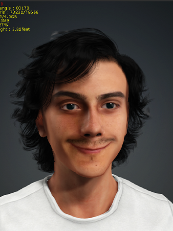

System: Carregando experiências de trabalho...

João Victor Nunes
@neznunez
6 de Janeiro de 2000
Rio de Janeiro, Brazil
jvnunes066@gmail.com
+5521971695864
Colégio Pedro II - Unidade Humaitá I, Humaitá
Ensino fundamental/médio
2006-2018
PUC-RIO
Design em Comunicação Visual
2019-2025
Senha incorreta!